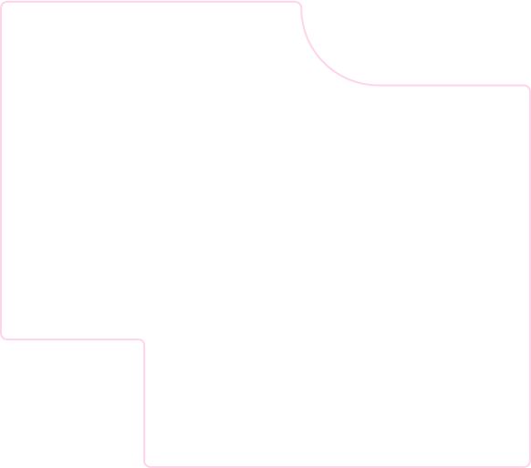

Hi, I'm Tien Dung Vu
An AI Engineer in Sydney who designs and builds intelligent systems from the ground up. I train machine learning models that learn from data, build computer vision pipelines that interpret the visual world, engineer NLP systems that understand language at scale, and architect LLM agents that reason, plan, and act autonomously. From raw data to deployed product, I own the full stack of intelligence.
View My Work
About Me
Engineering AI Systems End-to-End
A driven AI Engineer and Analyst who operates at the full depth of intelligent systems. My expertise spans machine learning that extracts signal from noise, NLP systems that make sense of human language, computer vision pipelines that interpret the visual world, and LLM agents that reason and act with autonomy. Backed by a strong foundation in Python, SQL, and AI system design, I build for production, not just proof of concept.
Always learning, always pushing further into what AI can achieve. Based in Epping, NSW and open to full-time AI and ML roles across Australia.
Get In TouchWork Experience
Where I've Worked
AI-Driven Marketing Intern at Affinity Marketing Australia
May 2026 - Present. Built AI-powered marketing automation systems and analytics infrastructure to eliminate manual production steps across recurring campaign cycles.
- Built 4 end-to-end content automation pipelines using Claude Code and n8n: SEO blog expander, video-to-content-pack, blog-to-social repurposing, and ad copy refresh
- Engineered a Looker Studio cross-channel dashboard consolidating GA4 and Search Console data, with automated weekly stakeholder summaries
- Developed a Google Ads copy generator producing 15+ Claude-generated variants and an email subject-line A/B testing pipeline
- Delivered a full SEO baseline audit across the top 10 landing pages and managed client CRM workflows in HubSpot and Salesforce
- Authored an AI automation playbook documenting all pipelines and tools for team handover
AI Engineer Intern at CMC Corporation Vietnam
October 2024 - April 2025. Designed and implemented computer vision systems for production image classification tasks.
- Built image classification systems using Convolutional Neural Networks (CNNs)
- Applied data augmentation and normalisation techniques to improve model generalisation
- Developed end-to-end deep learning pipelines covering data preparation, training, evaluation, and hyperparameter tuning
- Evaluated model performance and iteratively improved architectures to optimise accuracy
AI Engineer Intern at FPT Vietnam
September 2023 - February 2024. Gained foundational ML engineering experience across supervised learning, clustering, and NLP pipelines.
- Applied supervised learning algorithms including Linear Regression, Logistic Regression, and Decision Trees on structured datasets
- Implemented K-Means clustering for unsupervised pattern discovery
- Developed NLP classification models using word embeddings and text-processing techniques
- Conducted data analysis, visualisation, and experimentation using Google Colab
Passenger Service Agent at OACIS, Sydney Airport
October 2025 - Present. Delivering high-standard passenger assistance across Sydney Airport terminals in a fast-paced, safety-focused environment.
- Assisted passengers at information desks with directions, flight updates, terminal guidance, and general travel support
- Managed passenger flow through check-in, security screening, boarding gates, and arrivals to reduce congestion
- Collaborated with airline staff, security personnel, and airport operations teams to maintain smooth daily operations
- Supported elderly passengers, families, international travellers, and passengers requiring additional assistance
- Developed communication, conflict resolution, and stakeholder management skills across diverse passenger groups
My Skills
What I Bring to the Table
A comprehensive toolkit spanning the full intelligence stack. From low-level model training to production-ready deployment, I bring the depth to own any layer of an AI system.
- Machine Learning
- LLM Systems
- Agentic Pipelines
- Computer Vision
- NLP
- Data Analytics
Machine Learning & AI
Text classification, sentiment analysis, topic modelling, and image classification using CNNs, BERT, TF-IDF, and Naive Bayes. Capable across the full supervised and unsupervised learning spectrum.
LLM & Agentic Systems
Multi-agent LangGraph pipelines, RAG retrieval, prompt engineering, query generation, and result synthesis. I design agents that reason, search, and produce structured outputs autonomously.
Data & Analytics
Statistical analysis, feature engineering, exploratory data analysis, and data cleaning. I turn raw, messy datasets into clean, model-ready inputs and actionable insights.
Software Engineering
API integration, backend development, system design, and containerisation using Python, FastAPI, Docker, REST APIs, and Git. I build the infrastructure that intelligence runs on.
My Projects
Things I've Built
Pacific Wings Airline Strategy Simulator
Python, FastAPI, Next.js, XGBoost, LangGraph, Gemini AI, PostgreSQL, Docker. Full-stack airline strategy platform ingesting real BITRE, World Bank, and OurAirports data — featuring an XGBoost demand model (R²=0.952), Monte Carlo risk simulator, LangGraph 5-agent copilot, and a conversational AI agent with 11 function-calling tools, all surfaced across an 11-page Next.js dashboard.
Research LLM Agent (CLI)
Python, LangGraph, Gemini, SerpAPI, Docker. CLI research agent with a 4-node LangGraph pipeline (GenerateQueries → WebSearch → Reflect → Synthesize) and a conditional reflection loop that re-searches on coverage gaps, producing cited Markdown JSON answers with layered error handling and a 5-scenario test suite.
Misinformation Detection System
Python, scikit-learn, TF-IDF, Naive Bayes — UTS. Led a team of 5 to build a binary fake-news classifier using parallelised NLP preprocessing, TF-IDF (40k features), and Multinomial Naive Bayes — evaluated with F1/confusion matrix and persisted as reusable .pkl files with a real-time CLI prediction loop.
Australian Media Sentiment & Framing of AI
Python, VADER, RoBERTa, FinBERT, BERTopic, Guardian API — UTS / The Sydney Morning Herald. Analysed 1,033 Guardian Australia articles (2017–2026) with a three-model sentiment framework and BERTopic topic modelling, uncovering a persistent headline-body negativity divergence and a structural post-ChatGPT sentiment shift — delivering 6 editorial recommendations to SMH.
Stock Information & Alert App (SVB)
Swift, SwiftUI, Swift Charts, SwiftData, Polygon.io — UTS. iOS stock tracker built in a team of 4 (MVVM, async/await) — owned the stock detail screen with a Swift Charts price chart across 5 time periods, per-ticker financial news, and SwiftData-backed price alert configuration.
Contact Me
Let's Work Together
Open to full-time AI/ML roles across Australia. I'd love to chat about what we could build together.
Email MeOr call (+61) 466-599-354 · Epping, NSW, Australia · GitHub